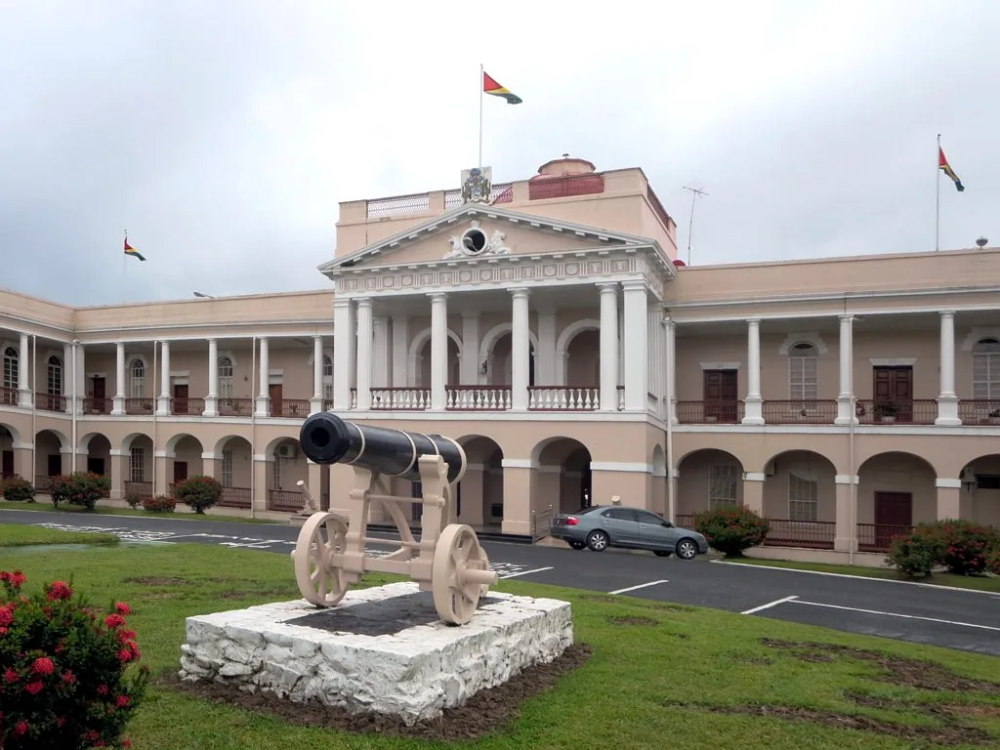

국회가 30일 운영위원회와 정보위원회의 국방방첩본부 등에 대한 감사를 끝으로 25일간의 2026년 정기국정감사 일정을 모두 마무리했다. 이재명 정부 2년차를 맞아 치러진 이번 국감은 공소청·중수청 출범 이후 처음 열린 감사이기도 했지만, 정작 국감이 끝난 뒤 여야 모두에게서 남은 것은 "제대로 된 정책 검증은 뒤로 밀렸다"는 자성과 비판의 목소리였다. 매년 반복되는 지적이지만 올해는 그 강도가 유독 컸다는 평가가 많았다.
국감 기간 내내 가장 많이 거론된 키워드는 '쇼츠 국감'이었다. 짧은 영상 클립으로 소비되기 좋은 자극적인 발언과 고성, 막말이 상임위마다 반복되면서, 정작 예산과 정책의 세부 내용을 짚는 질의는 상대적으로 뒷전으로 밀렸다는 지적이 여러 매체를 통해 쏟아졌다. 일부 상임위에서는 법적 조치를 거론하는 발언까지 나오며 공방이 격해지는 장면도 반복됐다. 의원들의 발언이 정책 검증보다 짧은 화면 속 '한 방'을 노리는 데 쏠려 있다는 비판이 국감 중반 이후 특히 거세졌다.

감사 운영의 공정성에 대한 의문도 뒤따랐다. 이번 국감에서 기업인이 증인이나 참고인으로 채택된 사례는 171건에 달했는데, 특정 사안과 직접 관련이 없는 기업 관계자까지 과도하게 불려 나왔다는 비판이 적지 않았다. 반면 피감기관 245곳, 전체의 약 31%는 국감 기간 단 한 차례의 질의도 받지 못한 채 넘어간 것으로 나타나면서, 감사가 특정 이슈에만 쏠려 있었다는 점도 드러났다.
준비 단계의 공백도 눈에 띄었다. 법무부 장관, 경찰청장, 중앙선거관리위원회 등을 포함해 41개 기관이 수장 공석 상태에서 국감을 받았다. 기관을 대표해 답변할 책임자가 자리에 없는 상태로 감사가 진행된 셈이어서, 실질적인 책임 추궁이나 정책 검증이 얼마나 가능했겠느냐는 의문이 뒤따랐다. 수장이 공석인 기관들은 직무대행이 답변을 대신하는 경우가 많았는데, 중대한 정책 결정의 책임 소재를 가리기 어려웠다는 지적도 함께 나왔다.
그럼에도 국감 자체는 예정된 일정을 모두 소화하며 마무리됐다. 국회는 이날 국회사무처·국회도서관에 대한 운영위 감사와 국방방첩본부에 대한 정보위 감사를 끝으로 25일 일정을 모두 마쳤다고 밝혔다. 다만 '정쟁'과 '쇼츠'라는 단어가 국감을 상징하는 표현으로 남으면서, 상임위 운영 방식과 증인 채택 절차를 손봐야 한다는 목소리가 정치권 안팎에서 커지고 있다. 매년 국감이 끝날 때마다 제도 개선이 거론됐지만 실제 운영 방식이 크게 달라지지 않았다는 점에서, 이번에도 같은 논의가 공허하게 반복되는 것 아니냐는 우려도 나온다.
국감이 끝나면서 국회의 시선은 곧바로 내년도 예산안 심사로 옮겨가고 있다. 정부가 국회에 제출한 2027년도 예산안 규모는 820조원을 넘어서는 역대 최대 수준으로, 국회 예산결산특별위원회는 이미 공청회 등을 통해 심사 준비에 들어간 상태다. 국감 과정에서 드러난 여야 간 날선 공방의 흐름이 예산안 심사에서도 이어질 가능성이 커, 연말까지 정치권의 긴장은 쉽게 풀리지 않을 전망이다. 역대 최대 규모의 예산을 놓고 어느 항목을 늘리고 줄일지를 둘러싼 협상이 본격화하는 만큼, 국감에서 드러난 여야 간 신뢰 부족이 예산 심사 일정에 어떤 영향을 미칠지도 관심사로 떠오르고 있다.